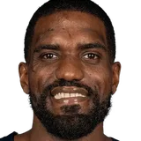

Played 2 seasons for 2 teams; his teams went 4–3 in his games.
Jump to: Record by opponent · Season by season · Teammate help
Compare Darius Johnson-Odom with…
Final NBA finish, season by season
Title Finals Other playoffs Missed playoffs. #1 = champion; the dashed line is last place that season. Each point opens that season's final standings.
All 30 teams ranked in 2012-13, his best finish (#12)Teammate help
 Kobe Bryant5.01 season
Kobe Bryant5.01 season Dwight Howard3.01 season
Dwight Howard3.01 season Michael Carter-Williams0.81 season
Michael Carter-Williams0.81 season
Career
Career records (W–L, W − L, with and without) include 2026-27 games through Nov. 21, 2026; season counts and finishes are through 2025-26. Each card opens its board in the same scope. How we count.

With and without his teammates
His 12 teammates with the most regular-season games together. "Together" is the team's record in the games both played for it; "Without him" is the team's record in the games Darius Johnson-Odom played for that team while the teammate was on it (between the teammate's first and last game for the team, the appearance span) and the teammate did not play. Fewer than 20 games without him: no gap. Games through Nov. 21, 2026. How we count.
- Antawn Jamison
 LA Lakers 2012-13
LA Lakers 2012-13- Together
- 4–0 100.0%
- Without him
- N/A N/A
- Gap
- Too few games without him
 Metta World PeaceLA Lakers 2012-13
Metta World PeaceLA Lakers 2012-13- Together
- 4–0 100.0%
- Without him
- N/A N/A
- Gap
- Too few games without him
 Jordan HillLA Lakers 2012-13
Jordan HillLA Lakers 2012-13- Together
- 4–0 100.0%
- Without him
- N/A N/A
- Gap
- Too few games without him
 Jodie MeeksLA Lakers 2012-13
Jodie MeeksLA Lakers 2012-13- Together
- 4–0 100.0%
- Without him
- N/A N/A
- Gap
- Too few games without him
 Darius MorrisLA Lakers 2012-13
Darius MorrisLA Lakers 2012-13- Together
- 4–0 100.0%
- Without him
- N/A N/A
- Gap
- Too few games without him
 Robert SacreLA Lakers 2012-13
Robert SacreLA Lakers 2012-13- Together
- 4–0 100.0%
- Without him
- N/A N/A
- Gap
- Too few games without him

- Together
- 4–0 100.0%
- Without him
- N/A N/A
- Gap
- Too few games without him
- Dwight HowardLA Lakers 2012-13
- Together
- 4–0 100.0%
- Without him
- N/A N/A
- Gap
- Too few games without him
- Kobe BryantLA Lakers 2012-13
- Together
- 4–0 100.0%
- Without him
- N/A N/A
- Gap
- Too few games without him
- Earl ClarkLA Lakers 2012-13
- Together
- 3–0 100.0%
- Without him
- 1–0 100.0%
- Gap
- Too few games without him
- Chris DuhonLA Lakers 2012-13
- Together
- 3–0 100.0%
- Without him
- 1–0 100.0%
- Gap
- Too few games without him
 Thaddeus Young
Thaddeus Young Philadelphia 2013-14
Philadelphia 2013-14- Together
- 0–3 0.0%
- Without him
- N/A N/A
- Gap
- Too few games without him
Latest completed seasons
- 2013-14·Philadelphia·#29 of 3019–63 · Missed playoffs
- 2012-13·LA Lakers·#12 of 3045–37 · Lost in the first round 0–4 to
 San Antonio
San Antonio
Season by season
Newest first; every header sorts. Final NBA finish is the team's rank among all teams that season (#1 = champion) and opens that season's standings. "Without him" uses the team-season window; the span line counts only the games between his first and last game for the team.
| 2013-14 | #29 of 30 | 19–63 23.2% | Missed playoffs | 3 of 82 | 0–3 0.0% | 19–60 24.1%span: 0–2, gap 0.0 | −24.1 | |
| 2012-13 | #12 of 30 | 45–37 54.9% | Lost 1st round 0–4 | 4 of 82 | 4–0 100.0% | 41–37 52.6%span: 2–3, gap +60.0 | +47.4 |
On/off, starts and close games
From the lineup data, 1996-97 on. On/off is net points per 100 possessions with him on the floor minus off, a different unit from the win-rate gaps. Started and off the bench are team records in those games; close games are those within 5 points in the last 5 minutes with him on the floor.
| 2013-14 | +7.3 | 0–3 0.0% | |
| 2012-13 | −82.8 | 4–0 100.0% |
Teammate help by season
Two separate numbers per season, each with every teammate that adds to it. Help this season = Teammates Score points for honors won that season by teammates who shared a game with him. Help coming in = the same teammates' honors from the season before. How help works.
- 2013-14Philadelphia
Michael Carter-Williams ROYAll-Rookie 1st0.753 g
Help this season: 0.75 = 0.75 Michael Carter-Williams
More: help coming in and other teammates
Help coming in (teammates' honors the season before): 0
Other teammates (no honors that season): Henry Sims 3 g, Hollis Thompson 3 g, Jarvis Varnado 3 g, Elliot Williams 3 g, James Anderson 3 g, BJ Mullens 3 g, Thaddeus Young 3 g, James Nunnally 2 g, Tony Wroten 2 g, Brandon Davies 1 g
- 2012-13LA Lakers
Kobe Bryant All-NBA 1stAll-Star54 gDwight Howard All-NBA 3rdAll-Star34 g
Help this season: 8 = 5 Kobe Bryant + 3 Dwight Howard
More: help coming in and other teammates
Help coming in (teammates' honors the season before): 11.5 = 6 Dwight Howard + 5.5 Kobe Bryant
Other teammates (no honors that season): Pau Gasol 4 g, Robert Sacre 4 g, Darius Morris 4 g, Jodie Meeks 4 g, Jordan Hill 4 g, Metta World Peace 4 g, Antawn Jamison 4 g, Chris Duhon 3 g, Earl Clark 3 g, Steve Blake 2 g, Devin Ebanks 1 g
Record against each opponent
Regular season, through 2025-26 (2026-27 games not included): 7 games, 4–3, against 7 franchises.
Grouped by franchise (named as today); game lists keep each team's name that season. Filters and the tab are kept in the URL, so a filtered view can be shared.
| Games list | |||||||
|---|---|---|---|---|---|---|---|
| 1 | 0–1 | 0.0% | −1 | N/A | 2013-14 | ||
| 1 | 1–0 | 100.0% | +1 | N/A | 2012-13 | ||
| 1 | 1–0 | 100.0% | +1 | N/A | 2012-13 | ||
| 1 | 0–1 | 0.0% | −1 | N/A | 2013-14 | ||
| 1 | 0–1 | 0.0% | −1 | N/A | 2013-14 | ||
| 1 | 1–0 | 100.0% | +1 | N/A | 2012-13 | ||
| 1 | 1–0 | 100.0% | +1 | N/A | 2012-13 |
Rows add up to his career record in his games. A playoff series counts when he played in it; early round-robin games show as games only. How we count.
Arrival and departure
Team wins per 82 games the season before he arrived vs his first season there, and his last season vs the season after he left. He leaves a team only when his next season with games is for another team (or he never plays again); whole seasons he missed and came back from are one "Missed" row with the team's record without him. Per 82 so short seasons compare fairly. These are team records, not a measure of what he did.
| Left | after 2013-14 | 2013-14: 19–63 19.0 per 82 | 2014-15: 18–64 18.0 per 82 without him | −1.0 wins | |
| Arrived | 2013-14 | 2012-13: 34–48 34.0 per 82 | 2013-14: 19–63 19.0 per 82 | −15.0 wins | |
| Left | after 2012-13 | 2012-13: 45–37 45.0 per 82 | 2013-14: 27–55 27.0 per 82 without him | −18.0 wins | |
| Debut | 2012-13 | 2011-12: 41–25 50.9 per 82 | 2012-13: 45–37 45.0 per 82 | −5.9 wins |